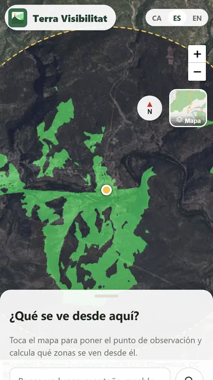
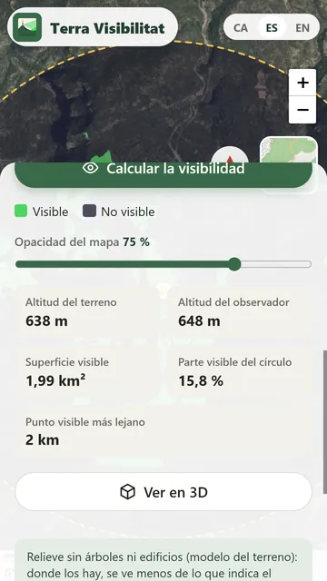
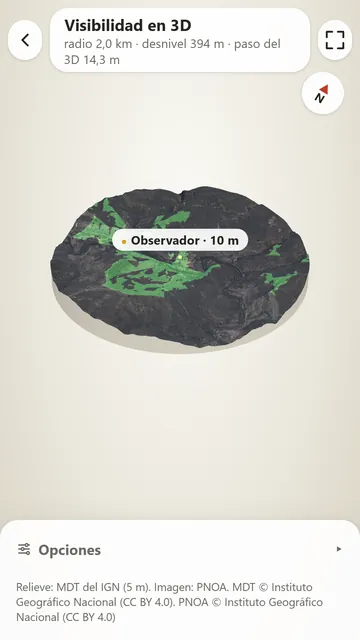
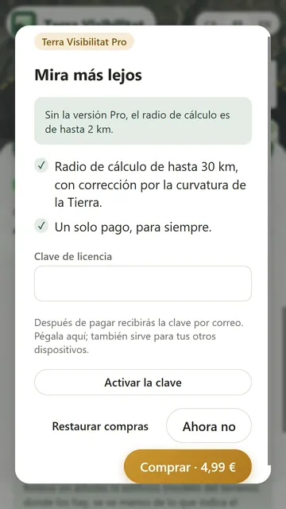

Terra Visibilitat: cuenca visual
Terra Visibilitat te dice qué se ve desde cualquier punto del mapa: qué zonas quedan a la vista y cuáles se esconden detrás del relieve, en cualquier lugar del mundo.
Para instalar una antena o llevar internet a una casa de campo, elegir el lugar de una torre de vigilancia, estudiar el impacto visual de una construcción o saber qué vistas tendrás.
Funciona en el navegador del móvil o del ordenador, sin instalar nada.




Qué puedes hacer
-
Elige el punto de observación
- Tocando el mapa o arrastrando el marcador
- Buscando un lugar por su nombre
- Con la ubicación del móvil
- Con la altura del observador (un mástil, una torre) y la del objetivo (una antena, una persona)
-
En pocos segundos tienes
- El mapa de zonas visibles y no visibles sobre la imagen aérea
- La altitud del punto, la superficie visible y el punto visible más lejano
- La vista 3D del relieve con la visibilidad pintada, que puedes girar y ampliar
-
Con la versión Pro
- Radio de cálculo de 5, 10, 20 o 30 km (gratis, hasta 2 km)
- Corrección por la curvatura de la Tierra y la refracción
-
Datos abiertos y de calidad
- En España, el modelo del terreno de 5 m del IGN y las ortofotos del PNOA
- En el resto del mundo, datos de elevación abiertos e imágenes Sentinel-2
- Sin cuentas, sin anuncios y sin estadísticas
Gratis, con un Pro de pago único
El cálculo con un radio de hasta 2 km, el mapa de visibilidad y la vista 3D son gratis. La versión Pro amplía el radio hasta 30 km y es una compra única, sin suscripción.
Precio del Pro: 4,99 € (IVA incluido), pago único.
El cálculo se hace sobre el terreno desnudo, sin árboles ni edificios: donde los hay, se ve menos de lo que indica el mapa. Los resultados son orientativos: no sustituyen un estudio de cobertura radioeléctrica ni un estudio de impacto visual oficial.
Fuentes de los datos
- Modelo del terreno y ortofotos del PNOA: Instituto Geográfico Nacional (IGN)
- Resto del mundo: Terrain Tiles (AWS) y Sentinel-2 cloudless (EOX)
Terra Visibilitat es una app de L'Abelluco, independiente de las administraciones públicas: no representa a ninguna ni está vinculada a ellas.